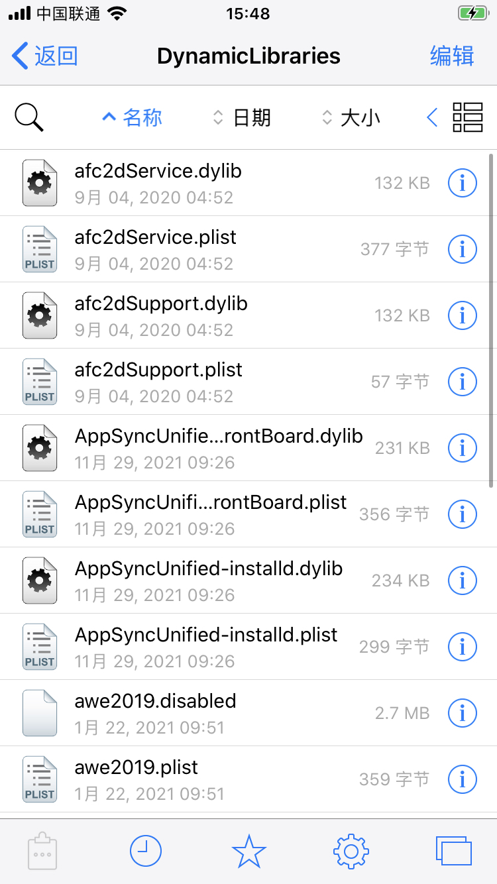

tweak插件
TODO：
- 【已解决】iOS中Cydia Substrate
关于tweak的详细介绍：
tweak- 是什么：a dynamic library
- all kinds of crack patches
- 叫法：
tweak=插件=extension=扩展 - 原理：
- 通过一个预定义的过滤器，被注入到特定的程序中，实现替代特定的Objective-C或Swift的方法函数，从而实现特定功能
- 底层基于：
Cydia Substrate
- 名词
越狱开发=jailbreak development=development of a Tweak=开发一个插件=插件开发
- 相关背景
- iOS有2种
动态库=dynamic librarydylib- 举例：
libsqlite.dylib,libz.dylib等
- 举例：
framework
- 现状
- iOS正向开发：主要用
framework- 发布方式：
ipa包- 用（开发者个人 或 企业）证书，把代码编译封装到
ipa包，然后去安装到iOS(iPhone)中- 当然也有不小的限制，但是支持普通非越狱手机
- 用（开发者个人 或 企业）证书，把代码编译封装到
- 发布方式：
- iOS逆向开发(主要是插件Tweak开发)：主要用
dylib- 发布方式：
deb包- 只能在越狱后的iOS（iPhone）中安装
- 发布方式：
- iOS正向开发：主要用
- iOS有2种
- tweak的位置
/Library/MobileSubstrate/DynamicLibraries- 存放了多种文件
dylibplist：定义插件的hook的范围bundle：插件的资源文件
- 截图举例
- 
- 存放了多种文件
- 是什么：a dynamic library